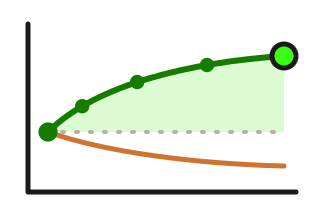

Zinskurve seit 1972
Lohnt es sich gerade, dein Geld lange zu binden? Das zeigt der Abstand zwischen der 10-jährigen und der 2-jährigen Staatsanleihe. Ist er groß, bekommst du für die lange Laufzeit deutlich mehr Zins. Ist er klein oder sogar negativ, bringt kurz fast dasselbe – oder mehr. Für Deutschland seit 1972 und die USA seit 1976, täglich aktualisiert.

10 Jahre minus 2 Jahre · Monatsdurchschnitte · 1972 – 2026 · Stand: 25.09.2026
Rendite der 10-jährigen minus Rendite der 2-jährigen Staatsanleihe, in Prozentpunkten; Monatsdurchschnitte, der letzte Punkt ist der laufende Monat. Über null steigt die Zinskurve, unter null ist sie invers.
Was der Renditeabstand bedeutet
Normalerweise bekommst du mehr Zins, wenn du dein Geld länger verleihst. Der Abstand ist dann positiv, die Zinskurve steigt. Wie steil sie steigt, wechselt: Erwartet der Markt, dass das allgemeine Zinsniveau steigt, ist die Kurve steil. Erwartet er, dass es sinkt, wird sie flach – oder sie kippt.
Dann bringt die 2-jährige Anleihe mehr als die 10-jährige. Das heißt invers und passiert selten: in Deutschland in rund 15 % der Monate seit 1972.
Drei Formen der Zinskurve
Das große Schaubild oben zeigt für jeden Monat genau diesen Abstand: 10 Jahre (rechtes Ende) minus 2 Jahre (linkes Ende). Hier bei „steil“ +2 Prozentpunkte, bei „flach“ +0,2, bei „invers“ −1.
Kurz gesagt: Der Abstand sagt dir, wie viel Zins die lange Laufzeit extra bringt – nicht, wie hoch das allgemeine Zinsniveau ist. Beides zusammen lesen: das Niveau bei Staatsanleihen seit 1970, die Form hier.
Was das für deine Anleihe heißt
Steil: Lange Laufzeit wird gut bezahlt. Wer sich den Zins für Jahre sichern will, bekommt dafür einen spürbaren Aufschlag.
Normal: Lang bringt etwas mehr, aber nicht viel. Ob sich das lohnt, entscheidet, wie lange du das Geld sicher entbehren kannst.
Flach: Kurz bringt fast dasselbe wie lang. Dann sprechen die Risiken für kurz – der Kurs schwankt weniger, und das Geld ist bald wieder frei. Oder du baust eine Leiter aus mehreren Fälligkeiten.
Invers: Kurz bringt sogar mehr. Verlockend – aber der Markt erwartet ein sinkendes allgemeines Zinsniveau. Wer heute lang bindet, hat den Zins fest, bevor er fällt.
Kurve → Laufzeit
Abstand über 1 Prozentpunkt = steil, 0,3 bis 1 = normal, 0 bis 0,3 = flach, unter 0 = invers – so stufen auch die Kacheln oben ein. Keine Empfehlung, sondern die Logik hinter dem Schaubild.
Kurz gesagt: Steil – lang wird gut bezahlt. Normal – etwas mehr für lang. Flach – kurz bringt fast dasselbe. Invers – kurz bringt mehr, lang sichert den Zins. Dein Ziel entscheidet: Zins sichern oder Geld parken.
Die inverse Kurve als Warnsignal
Die inverse Kurve hat einen Ruf: In den USA ging sie fast jeder Rezession voraus – meist ein bis zwei Jahre vorher. Der Grund ist einfach: Der Markt erwartet, dass die Notenbank den Leitzins senken muss, weil die Wirtschaft schwächelt.
Verlässlich ist das nicht. Die jüngste Inversion von 2022 bis 2024 war mit 26 Monaten die längste seit Beginn der US-Reihe 1976 – eine Rezession blieb bis heute aus. Für dich als Anleihe-Käufer zählt vor allem: Invers heißt, der Markt erwartet ein sinkendes allgemeines Zinsniveau.
USA: Kurve invers – und danach?
| Kurve invers | Rezession danach |
|---|---|
| 09/1978 – 04/1980 | ja – ab 01/1980 |
| 09/1980 – 10/1981 | ja – ab 07/1981 |
| 02/1982 – 06/1982 | mitten in der Rezession ab 07/1981 |
| 01/1989 – 06/1989 | ja – ab 07/1990 |
| 02/2000 – 12/2000 | ja – ab 03/2001 |
| 06/2006 – 03/2007 | ja – ab 12/2007 |
| 07/2022 – 08/2024 | bisher nein |
Monate mit inverser Kurve (Monatsdurchschnitt 10 J. − 2 J. unter null, Phasen ab drei Monaten) und der Beginn der nächsten Rezession nach der US-Datierung (NBER). 2019 war die Kurve nur an einzelnen Tagen invers; die Rezession 2020 kam durch die Pandemie.
Kurz gesagt: Invers ist ein Warnsignal für die Wirtschaft, kein Absturz für Anleihen – im Gegenteil: Fällt das allgemeine Zinsniveau danach, steigen die Kurse der langen Anleihen.
Datenquellen und Methodik
Methodik. Gezeigt wird die Rendite der 10-jährigen minus die Rendite der 2-jährigen Staatsanleihe in Prozentpunkten. Das Schaubild zeigt Monatsdurchschnitte (der laufende Monat aus den bisherigen Handelstagen), die Kacheln oben den jüngsten Tageswert. Einstufung der Kacheln: über 1 Prozentpunkt „steil“, 0,3 bis 1 „normal“, 0 bis 0,3 „flach“, unter 0 „invers“ – eine grobe Lesehilfe, keine amtliche Definition.
Datenquellen. Deutschland: Deutsche Bundesbank, Zinsstrukturkurve am Rentenmarkt (Svensson-Methode), börsennotierte Bundeswertpapiere mit Restlaufzeit 2 und 10 Jahre – Monatswerte seit September 1972, Tageswerte seit August 1997 (Zeitreihen BBSIS, abgerufen über die Bundesbank-API). Das sind Nullkupon-Renditen; der Tageswert auf Staatsanleihen seit 1970 ist die Rendite einer 10-jährigen Bundesanleihe mit jährlichem Kupon und liegt deshalb meist einige Hundertstel darunter. USA: Federal Reserve, Statistical Release H.15, Treasury constant maturities 2 und 10 Jahre, Tageswerte seit Juni 1976; Monatsdurchschnitte aus den Handelstagen. Rezessionen: Datierung des NBER. Aktualisierung täglich um 10 Uhr; die Bundesbank veröffentlicht den Tageswert am Abend, die Fed am Folgetag – „Stand“ nennt jeweils den letzten Wert.
Diese Seite erklärt und zeigt Daten; sie empfiehlt keine Anlage. Keine Anlageberatung.
Daten-Stand: 25.09.2026